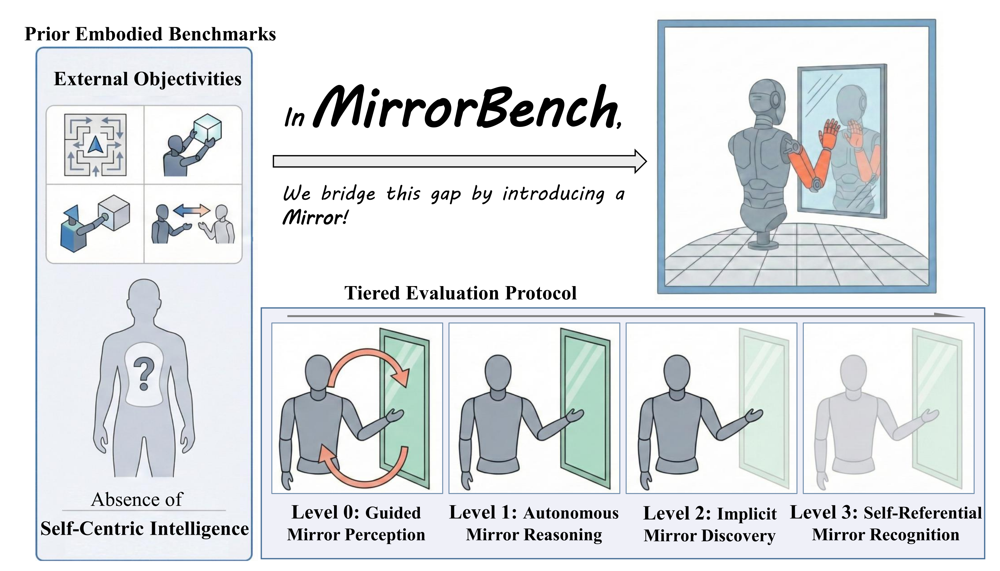

MirrorBench: Evaluating Self-centric Intelligence in MLLMs by Introducing a Mirror
Shengyu Guo,
Tongrui Ye,
Jianbo Zhang,
Zicheng Zhang,
Chunyi Li,
Guangtao Zhai
Shanghai AI Lab

Existing embodied benchmarks focus on external objectives and largely neglect self-centric intelligence.
MirrorBench bridges this gap by introducing a mirror-based setup and a
tiered evaluation protocol assessing MLLMs from visual perception to self-representation.

Overview

The evaluation features a Self-referential Inference Loop, in which an MLLM-powered embodied agent interacts with a simulated environment.
The environment is built from an asset pool comprising multiple body, hand, and mark configurations.
A four-level evaluation protocol is introduced to systematically assess mirror-related capabilities:
prompts for higher levels provide progressively less prior knowledge, increasing cognitive demand while keeping the physical environment identical across trials.
Example scenes for Levels 0–3 (right) illustrate the rising complexity toward higher-order intelligence.